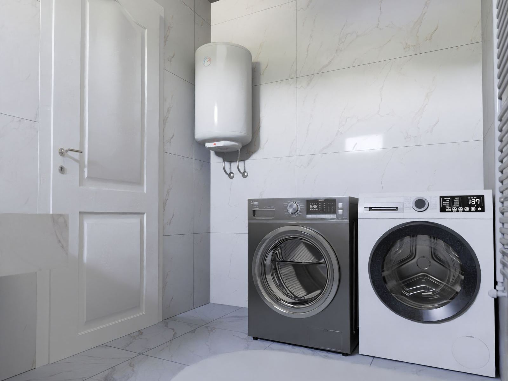

Many of the installation calls we get in Bayonne, NJ are not replacements at all. A family adds a bathroom and needs more capacity. A homeowner wants the heater out of a hall closet and into the garage or basement. A remodel calls for a second unit at the far end of the house, or an all-electric conversion means trading gas for a heat pump model. What these jobs share is new work: gas lines sized for the load, vents routed and pitched properly, circuits matched to the heater, and water lines run cleanly. Bayonne Water Heater works all of that out before the installation starts.
Sizing and placement decide most of the outcome. For a tank, we compare first-hour ratings against your household's busiest hour; for a tankless unit, we size by flow rate and winter temperature rise. Then comes placement. A gas heater needs a vent route and combustion air, a heat pump heater needs open space and a condensate drain, and a whole-house electric tankless unit usually needs a big dedicated circuit and matching panel capacity. Put a heater above a finished ceiling and it needs a drain pan; put a gas unit in a garage and code may require a raised platform. You get the trade-offs in plain terms, with no pressure.
On installation day, every step gets verified. New gas piping is run and pressure-tested, a sediment trap goes on, and the vent is routed exactly to spec. Electric and heat pump units get a circuit matched to their load. Water lines go in with accessible shutoffs and proper transitions between dissimilar metals, and the relief valve is piped full size to a safe discharge point. Where code requires an expansion tank, drain pan, or seismic straps, we add them, and we pull the permit when your jurisdiction needs one. Last, the heater is filled, gas models are checked for draft and combustion, and the temperature is set safely. Ready to start? Call (201) 361-6439 for an assessment in Bayonne.
Swapping out an old tank instead? See Water Heater Replacement in Bayonne.

How Much Does Water Heater Installation Cost in Bayonne?
For most Bayonne homes, a new water heater installation usually lands somewhere between $1,100 and $5,500. The type of heater sets the base price, and the site work around it moves the total up or down. You get a written price after a site check, before anything is ordered.
| Installation | Typical cost | What it usually means |
|---|---|---|
| Standard tank, same locationExisting water, gas or power, and venting reused | $1,100–$2,800 | Gas or electric tank hooked up where the old one stood |
| Tankless water heaterOften needs a larger gas line and new venting | $2,800–$5,500 | Often needs a larger gas line and new venting |
| Heat pump (hybrid) water heaterBefore any rebates; the space matters as much as the unit | $2,800–$5,000 | Needs open air, a condensate drain, and a 240V circuit |
| Relocating the water heaterMoving it out of a closet, attic, or living area | $500–$1,500 added | Moving it out of a closet, attic, or living area |
| New gas line or ventingNeeded when the fuel demand or vent type changes | $300–$1,200 | Common with tankless and high-efficiency units |
| Dedicated 240V circuitElectric tanks, electric tankless, and heat pump units | $300–$1,000 | Depends on panel space and the length of the wire run |
| Expansion tank, drain pan, strapsCode items many areas require on new installs | $150–$500 | Code items many areas require on new installs |
Ranges are typical for these options; you get an exact quote before any work starts.
What Moves the Cost Up or Down
- The type and size of heater you choose
- How much gas, venting, or electrical work the new heater requires
- Relocation, which adds new water, fuel, and drain lines
- Local permit fees and required safety items like expansion tanks and pans
If you are replacing a working-but-aging heater, we can plan the install on your schedule instead of in an emergency. For an exact number on your home, call (201) 361-6439.
Symptoms That Mean It's Time to Call
Catching a symptom early is often the difference between a quick part swap and a tank that gives out on the garage floor. Here are the most common indicators that it's time to call a professional:
- A new jetted tub that outpaces the heater's capacity
- Venting, relief valve piping, or gas connections that do not look right
- Interest in tankless or heat pump efficiency
- Gallons wasted down the drain while you wait for hot water
- A water heater installed above finished rooms with no drain pan
- A property where the water heater has to go in from scratch
- Morning showers that run cold for the last person
- A new bathroom, addition, or finished basement that needs more hot water
A Slow Leak Never Stays Slow
Tanks rarely fail all at once. They corrode from the inside for months, and the warning signs show up long before the floor gets wet. If you notice any of these signs, contact Bayonne Water Heater at (201) 361-6439 for a prompt inspection.
Water Heater Trouble? Call Us.
Our experienced technicians are standing by to help.
Tap to Call (201) 361-6439Common Questions We Hear
Why This Job Calls for a Pro
Installing a new water heater means doing several trades' work at once. The gas piping must be sized for the heater plus every other appliance on the line, then pressure-tested until it is leak-free. The vent must meet the manufacturer's rules on diameter, length, pitch, and clearances, or carbon monoxide can find its way indoors. Electric and heat pump units need a circuit, breaker, and wire gauge matched to their load, and whole-house electric tankless units can draw more current than many panels have to spare. Then come the water-side details: shutoffs, dielectric transitions, a correctly rated relief valve with a full-size discharge line, and code items like expansion tanks, drain pans, and seismic straps that differ from place to place.
Professional service handles every trade involved, not just setting the heater. We size by first-hour rating or flow rate, run and test the gas piping, route the vent to spec, match the circuit to the load, and add expansion tanks, drain pans, or straps where required. Gas units get a draft and carbon monoxide check before we leave. The result is an installation that is safe, sized correctly, and ready for inspection. If a smaller or simpler heater fits your needs better, you will hear it from us directly.
How We Handle Water Heater Installation
We work through a clear, repeatable process so you always know what's happening and what it will cost. Here's a look at each step our team takes:
Sizing and Location
Before any quote, we measure demand, look at where the heater can go, and confirm what gas, venting, and electrical work the job will need.
Clear Plan & Price
We lay out the heater options and the full scope of work, including permits and code items, then give a firm price before we start.
Clean Installation
Gas piping, venting, circuits, and water lines go in cleanly, with the relief valve piped to a safe point and required code items installed.
First Firing & Checks
The heater is filled, purged, and fired for the first time while we test every joint for leaks, confirm draft and carbon monoxide on gas units, and set the temperature.
Not Sure What You Need?
Our technicians can assess your water heater and recommend the option that actually makes sense.
Call (201) 361-6439 NowTips to Keep Your Water Heater Healthy
A few preventive steps can help you avoid a cold shower or a wet floor down the road. Here are our recommendations:
- Check the drain pan and relief valve discharge line now and then for signs of water
- Schedule regular maintenance, including an anode rod check
- Nothing flammable belongs near a gas burner or its air supply
- Leave working space around the heater, and never stack storage against it
- Flush a tank every six to twelve months to keep sediment from settling
- Keep the temperature around 120 degrees; hotter settings raise the risk of scalding
- Descale tankless units once a year, or more often with hard water
DIY vs. Professional Water Heater Installation
Some simple checks are fine to do yourself, but most water heater repairs benefit from professional tools, training, and experience. Consider the following comparison:
| Consideration | Doing It Yourself | Hiring a Pro |
|---|---|---|
| Capacity | Guessed from the old unit | Sized to your busiest hour |
| Gas Supply | Line size assumed, not calculated | Load calculated, leaks tested |
| Venting | Vent routed by guesswork | Routed to the manufacturer's spec |
| Wiring | Panel capacity never checked | Dedicated circuit sized correctly |
| Code Items | Pan, straps, and expansion tank skipped | Required items installed, permit handled |
| Outcome | Hot water, with hidden problems | Leak-free and vented right |
Get Water Heater Installation Help Today
Don't let a failing water heater get worse. Call Bayonne Water Heater now for prompt, professional service.
Call (201) 361-6439 TodayAreas We Serve for Water Heater Installation
Wherever you are in the area, the same experienced team shows up with the same parts and the same pricing. Find your community below.